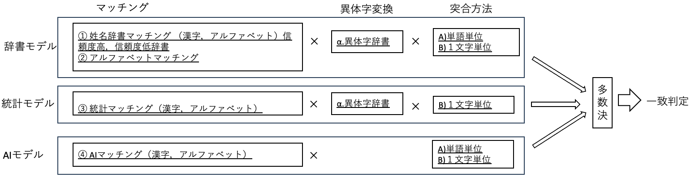

プログラム
Github に格納されているプログラムの実装について解説する。
動作環境
本プログラムは次の動作環境で確認している
RedHat Linux Enterprise 8
OpenJDK17
maven 3
JavaDoc
プログラムのJavaDocは こちら に格納されている。
構成
アーキテクチャ で定義されている，ストラテジ，モデル，エンジンに関しての実装については次のとおりである。
パッケージ
ストラテジ
jp.go.digital.kanjikana.core.executor.match.strategy
モデル
jp.go.digital.kanjikana.core.model
エンジン
jp.go.digital.kanjikana.core.engine
ストラテジ
本プログラムで実装しているストラテジは次のとおりである。
簡易モデル

